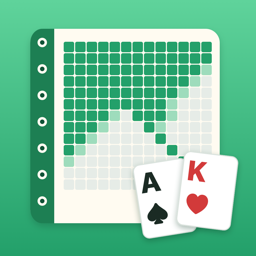

プリフロップ練習帳
ポーカーのプリフロップの判断をクイズで覚える学習アプリ（iPhone）
使い方
席の並びの図と、前の人のアクション、配られた2枚のカードを見て、フォールド・コール・レイズ（最初に参加するときはオープン）から1つ選びます。答え合わせで、目安のレンジ（13×13 の表）と、ひとことの理由が出ます。
お金・チップ・賭けは一切ありません。対戦や勝ち負けもなく、点数は「正解率」と「連続正解」だけの問題集です。
- ランダム出題：6人卓・100BB の10の場面からまんべんなく出題します
- ポジション別練習：UTG・HJ・CO・BTN・SB・BB のどれか1つの席に絞って練習します
- 苦手な手だけ：まちがえた手を、すぐ・5分後・1時間後・1日後と間をあけてもう一度出します。4回続けて正解すると卒業です
- 場面をつくる：人数・スタック・自分の席・前の人のアクションを選ぶと、その場面の目安のレンジを計算して表示します
- レンジ表をみる・成績：10枚の表をタップして確かめたり、ポジション別・場面別の正解率を見たりできます
よくある質問
このレンジは正しいの？
6人卓・100BB でよく教えられている一般的な形を、覚えやすいように丸めた「目安」です。ソルバーの正確な答えではありません。「場面をつくる」のレンジは、手の勝率・位置・ポットオッズから作るアプリの計算モデルです。
音を消したい
ホームの右下の「音 ON」ボタンで、オン・オフを切り替えられます。
成績を消したい・引き継ぎたい
成績はこの iPhone の中にだけ保存しています。「成績」の画面のいちばん下の「成績をリセット」で消せます。アプリを削除すると成績も消えます。ほかの端末への引き継ぎにはまだ対応していません。
お問い合わせ
不具合やご要望は、メールでお知らせください。お使いの iPhone の機種と iOS のバージョンを書いていただけると助かります。